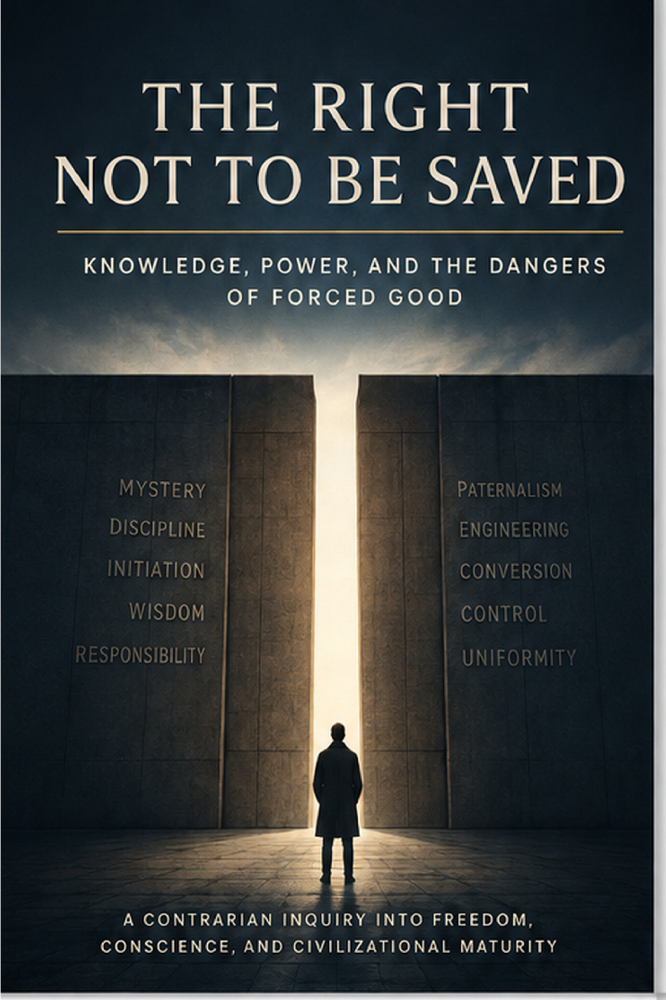

Power, Institutions & Society · Axiologic Research Editions
The Right Not to Be Saved
Knowledge, Power, and the Dangers of Forced Good
Examine the closed door as a moral problem and ask when aid, education, intervention, and force respect agency or become their own kind of domination.
The wisdom of the closed door
Not all knowledge travels safely across context, experience, development, and power. A closed door can protect exclusion, but it can also protect learning, trust, survival, and the right to decide when a transformation is welcome. The book begins by resisting the reflex that more information or more capacity automatically grants a mandate to intervene.
That resistance is not a romance of ignorance. It is an inquiry into who bears the costs when outsiders mistake partial understanding for authority.
Humanism’s double ledger
Education, medicine, development, emancipation, and humanitarian aid have changed lives for the better. They have also been used to flatten difference, make communities governable, and justify force. The book holds both entries in view, asking which kinds of help remain answerable to those whom they claim to serve.
A good that cannot be refused may become another name for power.
Selective help and accountable force
Refusal cannot settle every case; violence, domination, and irreversible harm can create duties to act. The final chapters therefore ask for thresholds, evidence, proportionality, consent where possible, and institutions that can review their own authority. The goal is neither paternalism nor abandonment, but help with limits.